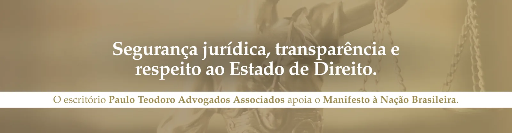

Manifesto de Minas pela Constituição, pela Justiça e pela República
O escritório Paulo Teodoro Advogados Associados manifesta seu apoio ao Manifesto de Minas pela Constituição, pela Justiça e pela República, divulgado em Belo Horizonte no dia 15 de setembro de 2026.

O documento reúne entidades representativas da sociedade civil mineira em defesa da Constituição da República, do Estado Democrático de Direito, da segurança jurídica e da estabilidade das instituições.
Em um cenário de relevantes questionamentos envolvendo autoridades e instituições do Sistema de Justiça, o manifesto reforça a importância de que todos estejam submetidos aos mesmos princípios e às mesmas garantias constitucionais, independentemente do cargo ou da posição institucional que ocupem.
Entre os princípios defendidos estão a igualdade perante a Constituição e a lei, a independência das instituições, a apuração imparcial e transparente de fatos, o respeito ao devido processo legal, ao contraditório e à ampla defesa, além da transparência e da integridade nas instituições públicas.
O manifesto também defende o aperfeiçoamento institucional, com mudanças que sejam construídas de forma prospectiva e voltadas ao fortalecimento das instituições, sem caráter de retaliação a pessoas ou decisões específicas.
A defesa das instituições democráticas, nesse sentido, não significa ausência de responsabilização. Significa assegurar que eventuais irregularidades sejam apuradas pelos mecanismos constitucionalmente previstos, com independência, transparência e respeito às garantias fundamentais.
Para o escritório Paulo Teodoro Advogados Associados, o apoio ao manifesto representa a reafirmação de princípios que são essenciais ao exercício da advocacia e à própria segurança das relações jurídicas: respeito à Constituição, segurança jurídica, independência institucional, transparência e responsabilidade.
Minas Gerais não propõe ruptura ou confronto entre os Poderes. Propõe equilíbrio, respeito à Constituição, responsabilidade e aperfeiçoamento institucional.
É com esse compromisso que o escritório Paulo Teodoro Advogados Associados manifesta seu apoio ao Manifesto de Minas pela Constituição, pela Justiça e pela República.
Paulo Teodoro – Advogados Associados